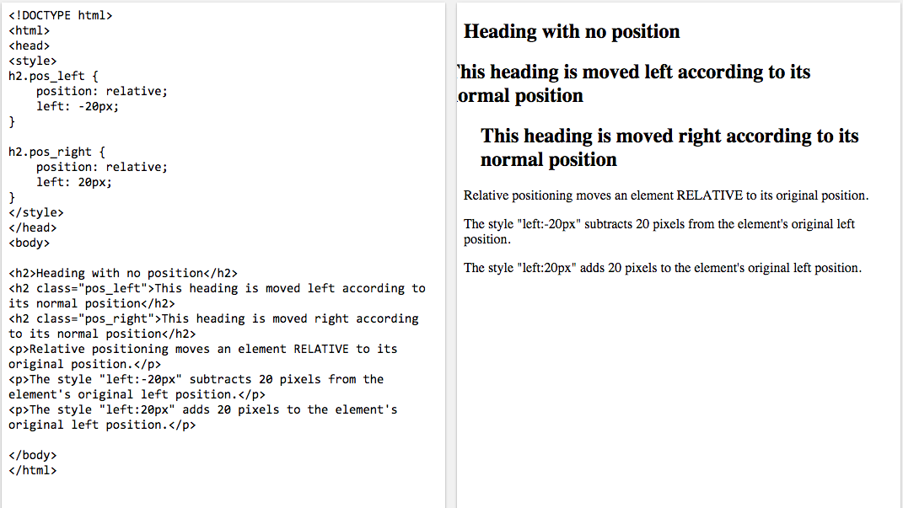
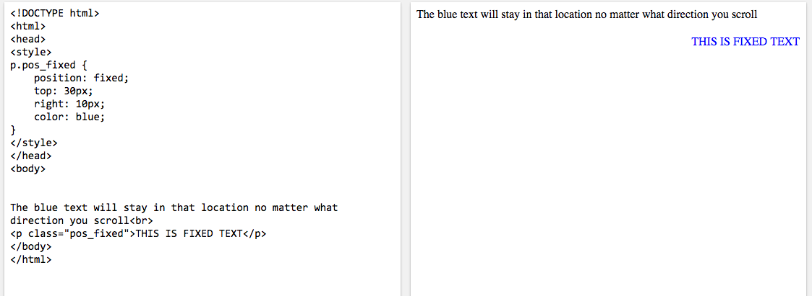

DBC CHEATSHEET ON CSS POSITIONING
Static
This is the default setting. Essentially, is not positioned in relation to anything else.
Relative
This behaves the same as static unless it is given properties (top, right, bottom, left) which will cause the element to be adjusted. Other content will not be adjusted to fit inot any gap left by the element.

Fixed
This will poistion the element relative to the viewport so that even if scorlled it will remain in the same place.

Absolute
This behavies like fixed positioning except that it will be relative to the nearest poistioned ancestor instead of viewport.
 Float
This allows you take that element out of normal flow and position it to the far left or right f the containing box. The element becomes a block-level element that other content flows around.
Float
This allows you take that element out of normal flow and position it to the far left or right f the containing box. The element becomes a block-level element that other content flows around.